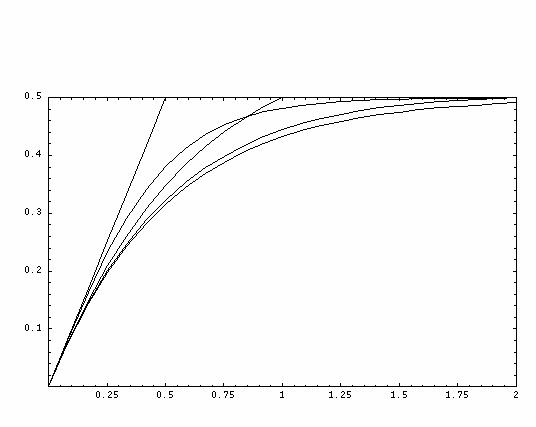

3-3-2-3-7 参考 組み換えと組み換え率
＜用語の説明＞
組み換えとは：
減数分裂の際に発生する相同染色体間のDNAの交換現象。
組み換え率とは：
ある2ローカスについて考える。減数分裂後に生じた染色体がその2ローカスのうち、1ローカスに父由来のアレルを持ち、もう1つのローカスに母由来のアレルを持つとき、その染色体はこの2ローカスについて組み換え体(recombinant)であるという。この組み換え体の占める割合を組み換え率(θ)と呼ぶ。
遺伝的距離 単位
Morgan(M，モルガン)：
ある距離において、1回の減数分裂を経るごとに平均1回の組み換えが起こるとき、その距離を１Morganと定義する。この単位によって規定される長さをGenetic
map distance(遺伝的距離)と呼ぶ。
実際の減数分裂のとき、ヒトの染色体は2倍体なので、１Mの距離にあるローカスの間では、2回の組み換えが起きている(これは単純化すると、父由来の染色体上で2回の組み換えが起きている場合と母由来の染色体上で同様のことが起きている場合と、父由来染色体上で1回、母由来染色体で1回起きている場合が含まれる)。ちなみに、ヒト1番染色体(最も長い)のモルガン数は2近くであり、21番染色体のそれは0.5を越える程度である。ヒト男性の減数分裂では、染色体全体において平均53キアズマ(chiasmata)が生じるので26.5M(26.5＝53/2)に相当する。ヒト女性染色体全体のモルガン数は39である。遺伝的距離と物理的距離(塩基対数に相当)との対応関係は、組み換えの起こりやすい領域とそうでない領域があるため、厳密に対応しないが、１cM
＝1,000,000塩基対といわれている。但し100cM＝1Mである。
＜(遺伝的)距離と組み換え率の関係(Map
functions)＞
距離と組み換え率とのあいだには、近ければ組み換え率が低く、遠ければ高いという関係があることは容易に想像できる。これは距離が短い範囲では組み換えの回数が少なく、距離が長いと組み換えの回数が多くなるからである。つまり、距離と組み換え率との関係を決めるためにはまず、距離と組み換えの回数の関係を明らかにし、ついで組み換えの回数と組み換え率との関係を明らかにすることで距離と組み換え率との関係がわかる。ここで、自明のこととして次のことが言える。距離が０であれば組み換え率は０であり、距離が十分に遠ければ組み換え率は1/2に収束することも想像に難くない。また、組み換え回数と組み換え率との間の関係は次のようになっている。
ある距離において2倍体で組み換えが1回も起きていなければ、組み換え率は０である。ある2倍体において、ある距離で組み換えが奇数回生じたとすると、2倍体のうちの、片方の1倍体の、両端のマーカーに注目すると、そこでは組み換えが起きており、もう片方の、1倍体の両端のマーカーでは組み換えは起きていない。これは組み換え率が1/2であることと同義である。一方、ある2倍体において、ある距離で組み換えが偶数回生じたとすると、2倍体のうちの、両方の1倍体で奇数回ずつ組み換えが起きている場合と、両方で偶数回ずつ組み換えが起きている場合の2通りが同一確率で想定される。
両端のマーカーのみに着目すると、前者の組み換え率は１、後者のそれは0である。これは組み換え率がやはり1/2であることと同義である(1/2×1+1/2×0＝1/2)。したがって組み換え回数が0回の時を除いて、組み換えの起きる回数によらず組み換え率は1/2である。今、組み換えが１度も起きない確率をP０とすると、組み換えが１回以上起きている確率は1-P０である。奇数回と偶数回の両方を考えあわせて、組み換え体が生じる確率は1/2となっている。
組み換えの回数を0回から無限大回まで通算すると、
0×P０+1/2×(1-P０)＝1/2×(1-P０)
この関係を表す式を
Mather’s formulaと呼ぶ。
θ＝1/2×(1-P０)
他方、距離(m)と組み換え回数の間の関係は自明ではなく、モデルが提唱されている。それを以下に示す。
モデル1(Morgan
map function)
θ＝1/2×(1-P０)＝m,
仮定： 組み換えは設定2点間で最大1回しか起こらないとする。(短距離間での近似である。)
0 ≦m≦1/2において、
組み換えの起こる確率(1-P０)はmに比例して上昇すると仮定し、
P０＝1-2m
と置くと、上のFunctionが得られる。
モデル2(Haldane
map function)
θ＝(1-Po)/2＝(1-e(-２ｍ))/2,
m＝-1/2×ln(1-2θ)
仮定：組み換えはあらゆる場所で相互に独立にランダムに起こるとする。
このことは言いかえると、ある2点間で組み換えの起こらない確率はmに関する
Poisson distributionに従うと言える。その関係は、
P０＝e(-２ｍ)
と書き表される。
このFunctionは次のような考え方でも導かれる。
今3 loci、A、B、Cがこの順序で並んでいるとする。Loci間の距離をm(XY)で表すと、
m(AC)＝m(AB)+m(BC)
一方、Loci間の組み換え率をθ(XY)で表すと、
θ(AC) ＝θ(AB)×(1-θ(BC))+(1-θ(AB))×θ(BC)
＝θ(AB)+θ(BC)-2θ(AB)θ(BC) ——— (％)
ここで式変換をすると、
1-2θ(AC)＝(1-2θ(AB))×(1-2θ(BC))
式の両辺の対数をとると、
ln(1-2θ(AC))＝ln(1-2θ(AB))+ ln(1-2θ(BC)) ——— (＃)
この式より、
m(XY)＝C×ln(1-2θ(XY)) ——— (！)
と置いてやると(＃)を満足させることがわかる。
今、C＝1/2とすると(！)の導関数(-1)/(1-2θ)のθ値の小さい範囲での値は約1となり、これは近距離間の組み換え頻度はその距離に比例するという実情(Morgan
map function)をよく説明するので、
m＝-1/2ln(1-2θ)
θ＝(1-e-２ｍ)/2
を得ることができ、これはHaldane map functionである。
しかしながら、現実の組み換えは近距離では相互に干渉しあって起こりにくく、Poisson distributionには従わないことが知られている。近距離間では(％)の式は
θ(AC)＝θ(AB)+θ(BC) (％’)
が成り立つ。
モデル3((1)Kosanbi
map function、(2)Cartes-Falconer map function、(3)Felsenstein map function)
仮定： 十分に近距離では
θ(AC)＝θ(AB)+θ(BC) (％’)
十分に遠距離では
θ(AC)＝θ(AB)+θ(BC)-2θ(AB)θ(BC) （％）
が成り立ち、その中間領域では
θ(AC)＝θ(AB)+θ(BC)-2cθ(AB)θ(BC) （％”）
と表せる。ここでcは距離の関数である。
ここで、c を、距離0の時(θ＝0)は0もしくはそれに近い値、距離無限大の時(θ＝1/2)は１である、という条件を満たすθの関数として設定したモデルがいくつか示されている。
(1)
Kosambi
map function
c ＝2θ
θ＝1/2×((e４ｍ-1)/(e４ｍ+1))
m ＝1/4×ln((1+2θ)/(1-2θ))
(2)
Carter-Falconer
map function
c ＝(2θ)３
(3)
Felsenstein
map function
c ＝K-2θ(K-1)
モデル4(Sturt
map function)
上記の3モデルは組み換えの起こる法則を推測して導いた関係であった。
今、経験的にある規則が知られており、それに基づいた関係式があり、Sturt
map functionと呼ばれる。
減数分裂時の組み換えには以下のような規則があることが観測されている。
染色体の減数分裂時には動原体を中心として広がる4分体(末端動原体(acrocentromea)を保持する染色体（13‐15、21‐22）を除く)では、ある長さ当たり必ず1回の組み換えが起こり(必然的組み換え)、さらにPoisson分布に従って無作為に組み換えが起こっている(無作為分組み換え)と考えるのが最も妥当な発生分布であることが観察されている。
今、必ず1回の組み換えが起こる単位距離をLとすると、
距離mの範囲に必然的組み換えが起こる確率は、
m/L
距離mの範囲に偶然的組み換えが起こる確率は、
1-e-ｍ(２Ｌ-１)/Ｌ
である。
従って、距離mにおいて必然的組み換えも偶然的組み換えも起こらない確率は
P０＝(1-m/L)e-ｍ(２Ｌ-１)/Ｌ
θ＝(1-P０)/2＝1/2(1-(1-m/L)e-ｍ(２Ｌ-１)/Ｌ)
である。
図
縦軸 θ
横軸 m(Morgan)
Morgan map
function, Sturt map function(L=0.5)
θ＝m＝f１(m)
Haldane map
function
θ＝(1-e-２ｍ)/2＝f２(m)
Kosambi map
function
θ＝((e４ｍ-1)/(e４ｍ+1))/2＝f３(m)
Sturt map
function(L＝1)
θ＝(1-(1-m)e-ｍ)/2＝f４(m)
Sturt mp
function (L＝2)
θ＝(1-(1-m/2)e-３ｍ/２)/2＝f５(m)
θ m(Morgan) 0

Morgan
θ＝2cm
Haldane
θ＝(1-e-２ｃｍ)
Kosambi
θ＝(e４ｃｍ-1)/( e４ｃｍ+1)
Sturt(L＝1)
θ＝1-(1-cm)e-ｃｍ
Sturt(L=2)
θ＝1-(1-cm/2)e-３ｃｍ/２
PＡＢ＝(1-θ)×P０ＡＢ+θ×(P０ＡＢ+P０Ａｂ)×(P０ＡＢ+P０ａＢ)
PＡｂ＝(1-θ)×P０Ａｂ+θ×(P０ＡＢ+P０Ａｂ)×(P０Ａｂ+P０ａｂ)
PａＢ＝(1-θ)×P０ａＢ+θ×(P０ａＢ+P０ａｂ)×(P０ＡＢ+P０ａＢ)
Pａｂ＝(1-θ)×P０ａｂ+θ×(P０ａＢ+P０ａｂ)×(P０Ａｂ+P０ａｂ)
d２＝(PＡＢ×Pａｂ-PＡｂ×PａＢ)２/((
PＡＢ+PａＢ)２×(PＡｂ+Pａｂ)２)
m(Morgan) d２ 0
カウンタ